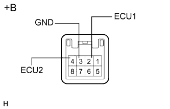

УПРАВЛЯЮЩИЙ ПЕРЕКЛЮЧАТЕЛЬ АМОРТИЗАТОРА > ПРОВЕРКА |
| 1. ПРОВЕРЬТЕ УПРАВЛЯЮЩИЙ ПЕРЕКЛЮЧАТЕЛЬ АМОРТИЗАТОРА |
|  |
Измерьте сопротивление в соответствии со значениями, приведенными в таблице ниже.
| Контакты для подключения диагностического прибора | Положение переключателя | Заданные условия |
| 3 (GND) - 4 (ECU2) | Положение COMFORT | Менее 1 Ом |
| Нормальное положение | 10 кОм или более | |
| 3 (GND) - 2 (ECU1) | Положение SPORT | Менее 1 Ом |
| Нормальное положение | 10 кОм или более |
| *a | Устройство с неподсоединенным жгутом проводов (управляющий переключатель амортизатора) |